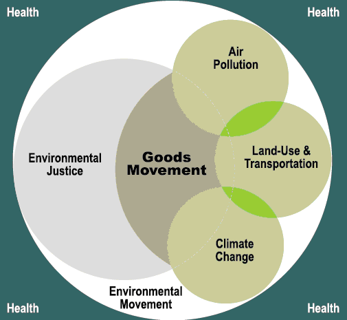

Fact Sheets: Environmental Justice
Environmental Justice (EJ) is about fairness towards the disadvantaged, and often addresses the exclusion of racial and ethnic minorities from decision making. EJs essence is to ensure that the benefits and burdens of multiple activities (e.g. air pollution, noise, injuries, division of communities, fatalities) are distributed in a manner that promotes a just and equitable society.
The Impact Project, an EJ collaborative based in Southern California, has mapped out how environmental justice overlaps the overall goods movement, air pollution, and land-use issues.
Figure 1. Environmental Justice and Goods Movement
Source: http://hydra.usc.edu/scehsc/pdfs/D-1-3%20Trade%20Health%20Environment.pdf
Historically, many communities close to freight facilities are minority or low income and, therefore, environmental justice issues are often at the forefront of community complaints regarding the facilities. This also means that any activity undertaken to expand freight operational activities may need to take into consideration how the distribution of impacts may affect any known EJ communities.
Federal Activity
On February 11, 1994, President Bill Clinton signed Executive Order (EO) 12898 entitled, Federal Actions to Address Environmental Justice in Minority Populations and Low-Income Populations. The EO pointed agencies to the existing regulations contained in the National Environmental Policy Act of 1969 (NEPA), Title VI of the Civil Rights Act of 1964, and laws that require public access and input to information. The EO did not create new legal rights, nor is not enforceable in a court of law. It is an administrative procedure to ensure compliance. EO 12898 has three basic purposes:
- Focus the attention of federal agencies on the human health and environmental conditions in minority communities and low income communities with the goal of achieving environmental justice.
- Foster nondiscrimination in federal programs that substantially affect human health and the environment.
- Give minority communities and low income communities greater opportunities to participate in the public decision making with greater access to public information on matters relating to human health and the environment.
In response to EO 12898, multiple agencies issued their own directives regarding EJ. In the transportation context, the U.S. Environmental Protection Agency developed specific guidance for EJ analysis, and the U.S. DOT also created directives in the transportation agencies.
According to the Federal Highway Administration (FHWA), a transportation agency must determine whether a program, policy, project, or activity will impact minority or low income populations disproportionately and that these communities are:
- Afforded an opportunity under Title VI to participate in the planning process to ensure a non-discriminatory process,
- Involved in the identification of impacts associated with the project in an effort to determine if the effects suffered by these populations are disproportionately high (i.e. they carry more of the burdens than benefits), and
- Involved in identifying mitigation and enhancement measures associated with a particular project.
These requirements apply to projects that receive federal funding or require a federal permit.
The FHWA recommends identifying minority and low-income populations as early as possible in any transportation planning process, and addressing these communities’ concerns.
If a freight group is planning any activity it is recommend that they define any “minority population” or “low-income population” around the proposed facility and determine if these populations may be a “disproportionally high impact.” The U.S. DOT, the FHWA and the Council on Environmental Quality (CEQ) EJ guidelines provide definitions of these terms that freight groups can use.